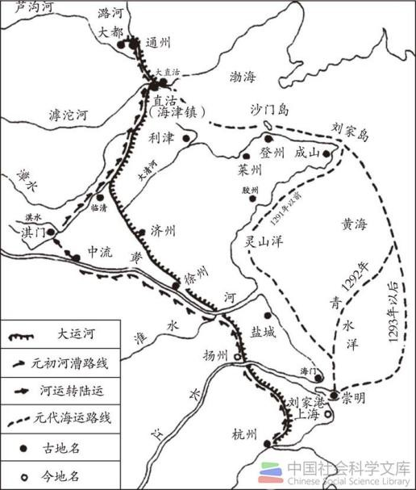
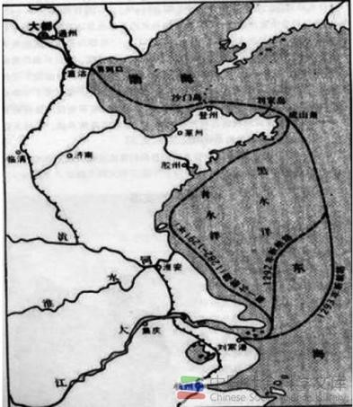

北洋漕运是元代国内航海活动中的重大事件。所谓北洋，泛指长江口以北的东海、黄海和渤海水域。通过海道运输粮食，可溯至秦代； 其后的汉武帝、隋炀帝、唐太宗等征辽东与高丽时，所需军粮亦多由登、莱或长江下游入海而运至河北及辽东。 然而，其时海漕规模小，次数少，多系战时应变部署。真正大规模的海运漕粮，则始于元代。
出自《“一带一路”视野下京津冀区域文化史研究》
出自《太仓航海文化遗存调查》
元朝立国后，政治重心在北方，经济重心在南方，南粮北调牵系政局安危。至元十九年（1282年），丞相伯顏追忆“平江南时，尝命张頊、朱清等，以宋库藏图籍， 自崇明州从海道载入京师”之事，“以为海运可行，于是请于朝廷，命上海总管罗壁、朱清、张頊等，造平底海船六十艘，运粮海船六十艘，运粮四万六千余石，从海道至京师”。 从此，海漕成为元代南粮北运的重要途径，终元不废。